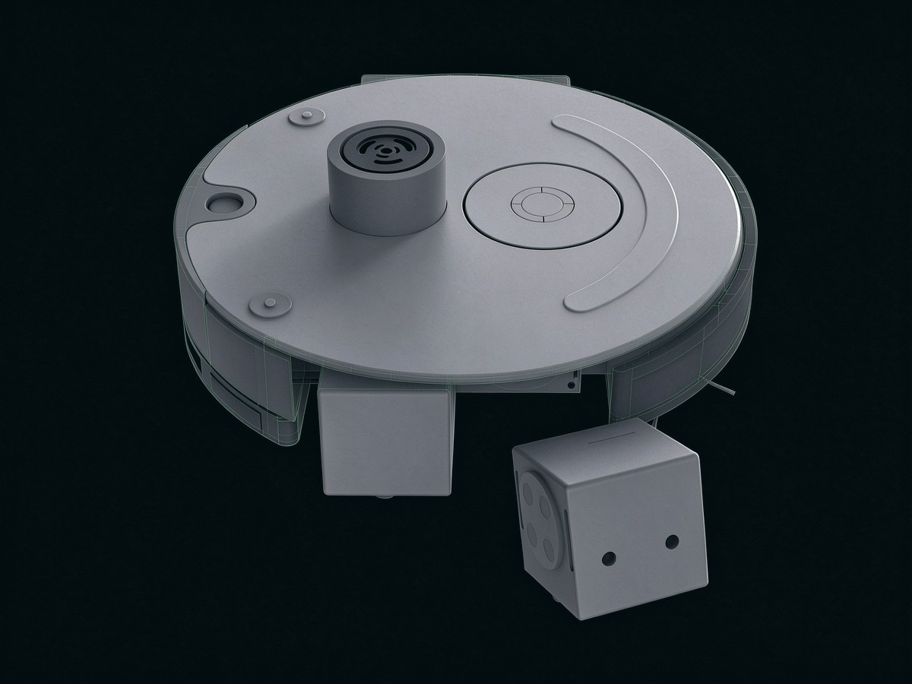
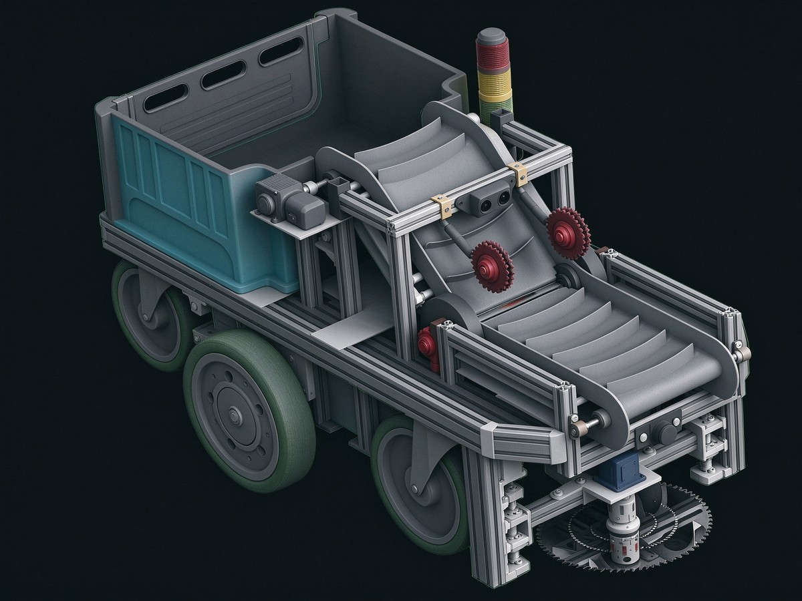
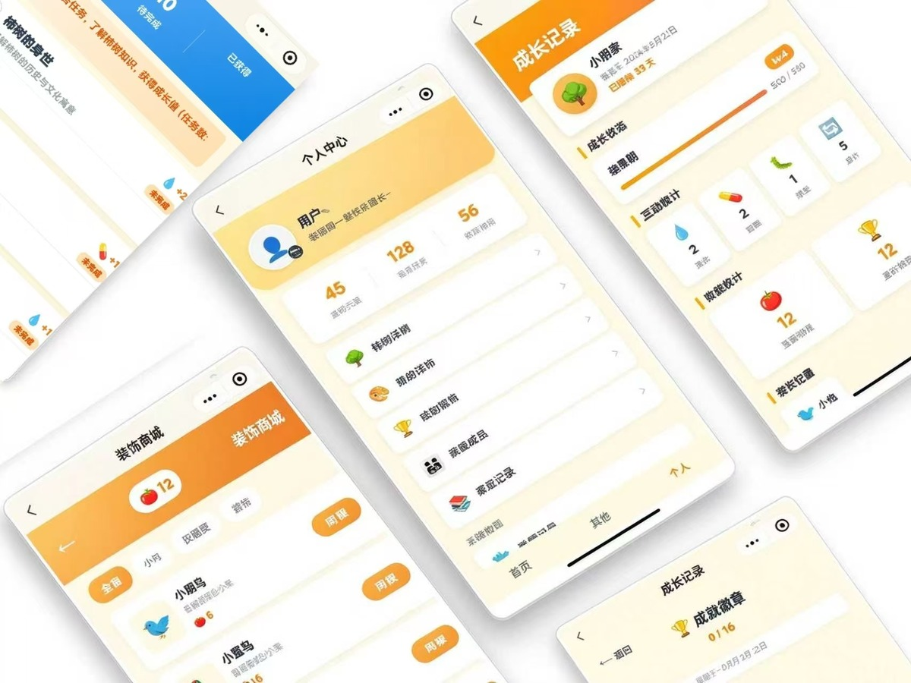
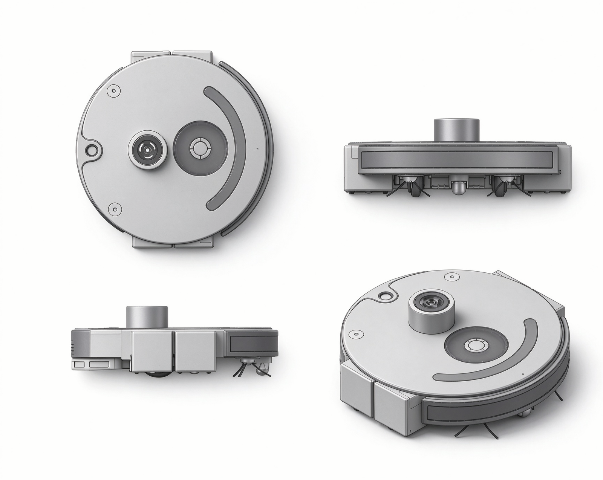
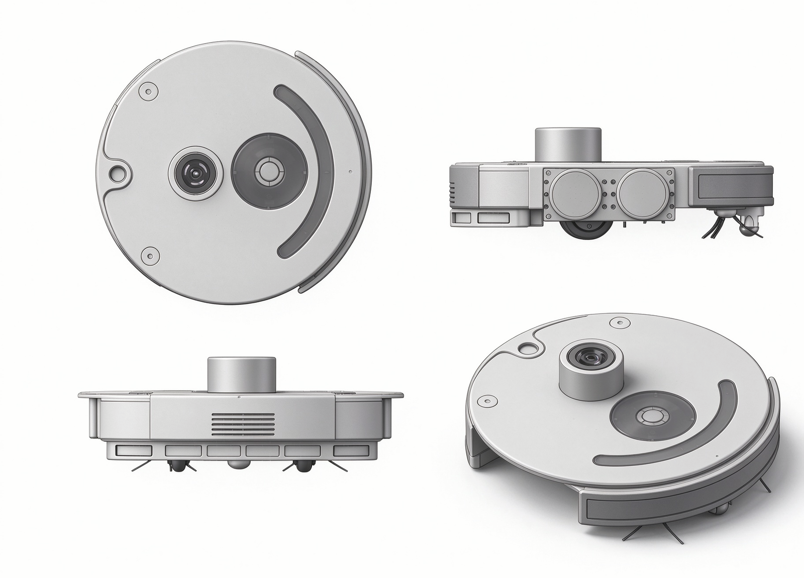
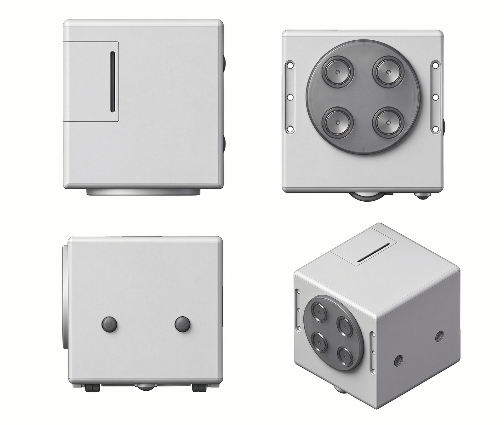
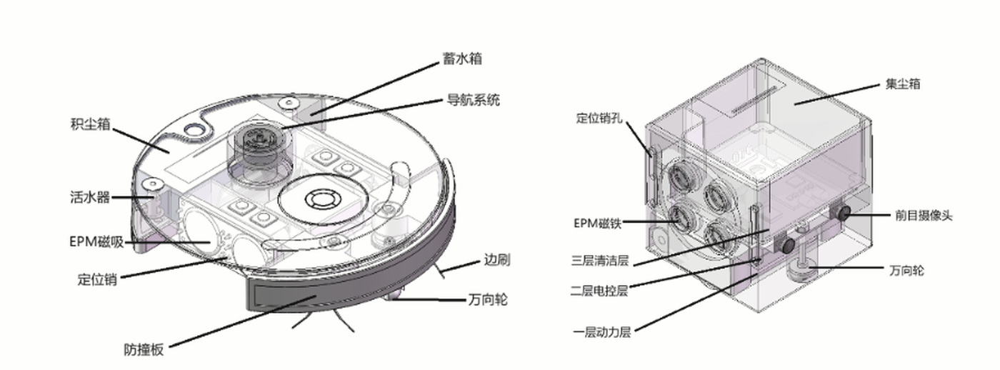
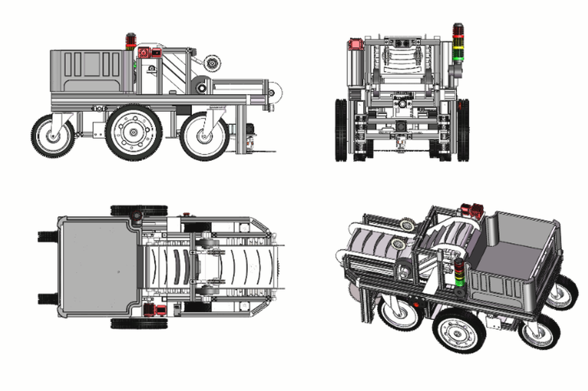
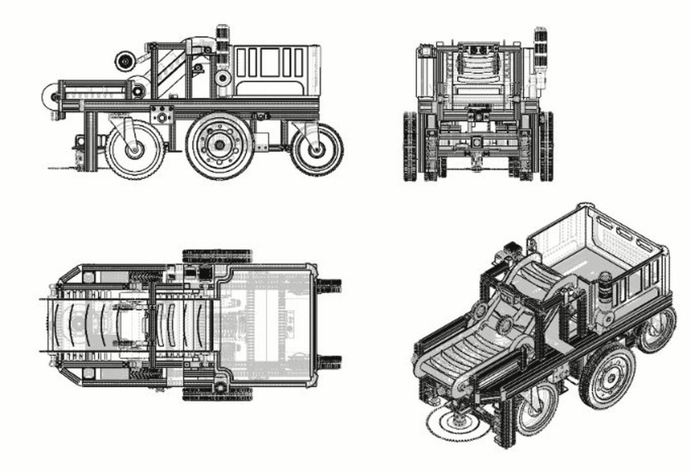

Ideas,
made
tangible.
Mechanical design for robotics equipment — whole-machine structure, 3D modelling and simulation, machine vision and embedded systems.
01 — PROFILE / 个人简介
Mechanical design
for real machines.
I am Chenxi Fu, a mechanical design student at Liaoning Technical University, working toward robotics equipment R&D. My work spans whole-machine structural design, 3D modelling and simulation, machine vision and embedded development. I care about engineering execution and real-world validation — and I stay with hard problems until they work.
目标感清晰，深耕机器人装备研发方向，擅长整机结构方案设计、三维建模仿真、机器视觉与嵌入式开发，注重工程落地与实际验证，执行力强，愿意沉下心攻克技术难题。
02 — SELECTED WORK / 精选作品
Three projects,
three ways of making.
From agricultural robotics and modular hardware to a full-stack mini program — three projects, three kinds of engineering.
从机械结构到数字界面，记录想法落地的过程。

Product design · Mother-child modular
Separable
Mother-Child Vacuum
可分离式子母模块化扫地机器人
A round mother unit carries 55 mm cube sub-units with EPM electric-permanent-magnet docking, releasing them into gaps and corners the main body cannot reach.

Agricultural robotics · AGV + YOLO
Pineapple
Harvesting Robot
智能菠萝采收机器人
An autonomous pineapple harvester combining AGV magnetic guidance, YOLOv8 vision and a full mechanical / electrical system.

WeChat Mini Program · Full-stack
New Persimmon
Heritage Platform
「新柿界」亲子非遗体验平台
An independent full-stack WeChat Mini Program for parent-child heritage experiences — AI identity, tasks, check-in and community.
WORK 01 / PRODUCT DESIGN
Separable
Mother-Child Vacuum
可分离式子母模块化扫地机器人
A separable mother-child modular robot vacuum for tight spaces and zoned cleaning. The round mother unit navigates autonomously and carries multiple 55 mm cube sub-units; EPM electric-permanent-magnet docking lets it release a sub-unit into a gap or corner and recover it after cleaning. Full 3D structure, parts and assembly are complete in SolidWorks, with KeyShot appearance renders; physical prototyping and testing are not yet started.
01 / OVERALL MACHINE
Overall Exterior Form
The orthographic multi-view presents the overall exterior form of the modular cleaning mother robot, including front, top and side projections. It demonstrates chassis outline, driving wheels, obstacle-avoidance structure, shell profile and external magnetic docking interface. This sheet establishes the overall dimension and external layout before exploring internal structure and sub-unit details.
本正交多视图展示模块化清扫母机的整体外观形态，包含主视图、俯视图、侧视图。表达底盘轮廓、行走轮、越障结构、外壳造型与外部磁吸对接接口。该视图在剖析内部结构与子单元细节之前，确立整机外形尺寸与外部布局。

02 / MOTHER UNIT
Mother Unit Exterior Form
The orthographic multi-view presents the overall exterior form of the modular cleaning mother unit, including front, top and side projections. It demonstrates chassis outline, driving wheels, obstacle-avoidance structure, shell profile and external magnetic docking interface. This sheet establishes the overall dimension and external layout before exploring internal structure and sub-unit details.
本正交多视图展示模块化清扫母单元的整体外观形态，包含主视图、俯视图、侧视图。表达底盘轮廓、行走轮、越障结构、外壳造型与外部磁吸对接接口。该视图在剖析内部结构与子单元细节之前，确立整机外形尺寸与外部布局。

03 / SUB-UNIT
Detachable Cleaning Sub-unit
The cubic sub-unit is an independent modular cleaning module. Orthographic and isometric views show its outer contour, magnetic docking face and internal installation envelope.
可拆卸清扫子单元 · 立方体子单元为模块化独立清扫模块，展示外形轮廓、磁吸对接面与安装边界。

04 / INTERNAL LAYOUT
Internal Layout — Cutaway
The cutaway pair reveals the mother unit's water tank, dust box, navigation system and EPM magnetic docking mechanism, alongside the sub-unit's three-layer stack — power, electronics and cleaning — with the camera, magnetic assembly and caster installation positions marked.
内部布局（剖视）· 母机展示蓄水箱、积尘箱、导航系统与 EPM 磁吸对接机构；子单元展示动力层、电控层、清洁层三层堆叠，并标注前置摄像头、磁吸组件与万向轮安装位置。

Overview
The project targets tight spaces and zoned cleaning with a separable mother-child modular robot vacuum. The round mother unit navigates and carries several 55 mm cube sub-units; each sub-unit is an independent micro cleaning module. An EPM electric-permanent-magnet interface handles fast docking and release: the mother unit carries a sub-unit to the target area, releases it into a narrow gap or corner, and recovers it by magnetic docking when cleaning is done.
All 3D structure is complete: part modelling and assembly in SolidWorks, appearance rendering in KeyShot. The machine has not yet been physically prototyped or tested.
Work
- 01Overall architecture
Defined the mother-child separation concept: round mother-unit chassis and 55 mm cube sub-units. Planned the sub-unit's three internal layers — power, dust / airflow, and electronics / sensing.
- 02Mechanical structure
Mother unit: obstacle-crossing wheel set, side brush and bumper. Sub-unit: drive wheels, caster, micro centrifugal blower and brush cleaning structure. Designed the EPM docking mechanism with locating pins for precise alignment and reserved a Pogo Pin electrical interface.
- 03Component selection & space check
Selected a micro cylindrical EPM, MPU6050 attitude module, infrared obstacle sensors and a micro centrifugal fan within the 55 mm envelope. Completed internal layout and interference checks in SolidWorks, fixing base plate, shell wall thickness, wheel and brush dimensions.
- 043D modelling & assembly
Modelled all parts and assemblies in SolidWorks, including the magnetic docking mechanism, articulated obstacle-crossing wheel structure and fan duct, with the required constraints.
- 05Rendering & visualisation
Used KeyShot for materials and camera views — plastic shell, metal magnetic parts, rubber wheels, nylon brush and infrared filter — producing paper-ready renders on a pure white background for the thesis and defence.
Innovation
- Modular magnetic separationEPM docking gives fast attach / release. Unlike an integrated robot vacuum, the sub-units split off to clean under furniture and in narrow gaps the mother unit cannot enter, extending coverage.
- Compact three-layer sub-unitWalking drive, blow / suction duct, attitude sensing and obstacle sensing are integrated in a 55 mm cube. Locating pins assist magnetic alignment, solving the offset and misalignment of purely magnetic docking.
- Combined cleaningA micro centrifugal blower plus side brush uses a "blow + sweep" method: the fan lifts dust from gaps and the brush collects it, improving cleaning in tight areas.
- Passive articulated obstacle crossingThe mother unit uses a passive articulated wheel set; a mechanical lever handles obstacle crossing without a complex active drive, keeping the structure simple and reliable and lowering control difficulty.
BOM / MOTHER-CHILD
Mother-child assembly BOM
| No. | Component | Description | Qty |
|---|---|---|---|
| 01 | 越障轮 | 底部越障辅助轮 | 16 |
| 02 | 底盘 | 整机底盘骨架 | 3 |
| 03 | 刷子 | 清扫毛刷 | 2 |
| 04 | 垃圾箱 | 集尘垃圾箱 | 1 |
| 05 | EPM | 磁吸对接模块 | 32 |
| 06 | 电池 | 供电电池 | 5 |
| 07 | 万向轮 | 底部万向从动轮 | 8 |
| 08 | 边刷 | 主清扫边刷 | 12 |
| 09 | 外壳 | 整机外壳 | 2 |
| 10 | 防撞板 | 前部防撞缓冲板 | 1 |
| 11 | 垫片 | 安装垫片 | 1 |
| 12 | 螺母 | 紧固螺母 | 1 |
| 13 | 子单元 | 可拆卸清洁子单元 | 24 |
| 14 | 子单元_mini齿轮 | 子单元微型传动齿轮 | 8 |
| 15 | 子单元_大齿轮 | 子单元大型传动齿轮 | 8 |
| 16 | 子单元_小齿轮 | 子单元小型传动齿轮 | 8 |
| 17 | 子单元_中齿轮 | 子单元中型传动齿轮 | 16 |
| 18 | 子单元_电机 | 子单元驱动电机 | 8 |
| 19 | 子单元_外壳把手 | 子单元提拉把手 | 8 |
| 20 | 子单元_转动轴 | 子单元传动轴 | 32 |
| 21 | 子单元_小齿轮垫片 | 子单元小齿轮安装垫片 | 8 |
| 22 | 子单元大齿轮头 | 子单元大齿轮端盖 | 8 |
| 23 | 子单元_齿轮包裹 | 子单元齿轮防护壳 | 4 |
| 24 | 子单元_轮子外壳 | 子单元轮子外罩 | 8 |
| 25 | 子单元_轮子外壳右边 | 子单元右侧轮子外罩 | 8 |
| 26 | 子单元_清洁箱 | 子单元清洁尘箱 | 12 |
| 27 | 子单元_万向轮 | 子单元万向从动轮 | 24 |
| 28 | 红外避障传感器 | 红外避障传感器 | 4 |
| 29 | 陀螺仪 | 姿态检测陀螺仪 | 4 |
| 30 | 蜂鸣器 | 提示蜂鸣器 | 4 |
| 31 | 鼓风机 | 负压吸尘鼓风机 | 16 |
| 32 | 鼓风机_吹风机 | 鼓风机出风组件 | 8 |
| 33 | 子单元_尘盒 | 子单元集尘盒 | 4 |
| 34 | 子单元_前目 | 子单元前置摄像头 | 8 |
| 35 | 子单元_前目挡板 | 前摄像头挡板 | 4 |
| 36 | 前目主控板 | 前置主控板 | 4 |
| 37 | 子单元_微型圆柱 EPM | 子单元微型圆柱磁吸模块 | 16 |
| 38 | 子单元镜像 | 子单元对称镜像件 | 4 |
| 39 | 子单元_齿轮包裹镜像 | 子单元齿轮防护壳镜像件 | 4 |
| 40 | 清洗盘 | 清洁清洗盘 | 1 |
| 41 | 活水器 | 活水清洁器 | 4 |
* BOM 共 41 项，表格区域内上下滚动查看。
WORK 02 / AGRICULTURAL ROBOTICS
Pineapple Harvesting
Robot
智能菠萝采收机器人
A fully autonomous pineapple harvesting robot built around AGV magnetic guidance and YOLO-based vision. I led the project and completed the whole machine from zero to one — SolidWorks structure and motion simulation, mechanical / conveying / cutting mechanisms, a layered electrical architecture and a field-specific vision dataset. It closes the loop from row following and fruit localisation to cutting, weight capture, headland turning and full-bin alerts.
02 / MACHINE FORM
Exterior & Mechanism
Built as a complete machine model: six-wheel AGV chassis, inclined wave-baffle conveyor, lead-screw lifting cutting head, collection bin and the full electrical stack. The shaded model and line drawing share the same four-view layout — one shows form and material, the other exposes the mechanism and structure.
整机三维模型与线稿采用同一套四视图布局：六轮 AGV 底盘、波状挡板输送、丝杆滑台切割、收集箱与电控系统。一张看形体与材质，一张看结构与机构关系。


Overview
Pineapple harvesting in China still depends heavily on manual labour: the workforce gap is large, the field environment is harsh, and existing machines are difficult to deploy in real orchards. This project develops a fully automatic pineapple harvesting robot based on AGV magnetic guidance and YOLO machine vision.
I completed the whole machine from zero to one: the SolidWorks structure model and motion simulation, the mechanical, conveying and cutting mechanisms, and the full layered electrical system. The robot performs autonomous row following, fruit detection and localisation, automatic cutting, load-cell weight capture, headland turning and full-bin alerts.
Main work
- 01Mechanical structure
4040 aluminium six-wheel AGV chassis; inclined wave-baffle belt conveyor; lead-screw lifting circular cutter. Static stress and deformation simulation on rollers and conveying parts to validate stiffness and avoid belt deviation, fracture and deformation in the field.
- 02Machine vision
A 902-image field dataset for YOLOv8 covering leaf occlusion, small targets and changing outdoor light. Inference confidence was tuned for the field; the model outputs fruit detection, localisation and the stalk cut point.
- 03Electrical & control
A six-unit layered architecture: power / safety, main control, sensing, motion drive, wireless and alarm. Magnetic guidance sensors, a stereo industrial camera and a load cell are integrated, with PID row following, vision-based headland turning, harvest closed-loop judgement and full-bin audible / visual alarm.
- 04Data loop
Fruit images and weight are collected during harvesting, stored in a local field sample database and uploaded wirelessly to a host, continuously expanding the dataset and iterating the vision model.
Innovation
- Magnetic guidanceMulti-channel signal acquisition with segmented differential correction for bumpy orchards and electromagnetic interference.
- Modular conveyorExternal roller modules reduce belt deviation and can be replaced individually for field maintenance.
- Active lifting cutterA lead-screw slide lifts the cutting disc, adapting to stalk-height differences and reducing missed cuts versus a passive floating head.
- Sensor baseFront semi-enclosed base with multi-axis adjustment, dust protection and impact protection for multiple sensors.
- Harvest closed-loopA pressure sensor judges whether harvesting succeeded; faults trigger an audible / visual warning.
- Data business loopField collection → local storage → wireless upload → model iteration.
WORK 03 / MINI PROGRAM
New Persimmon
Heritage Platform
「新柿界」亲子非遗体验平台
An independent full-stack WeChat Mini Program for parent-child intangible-cultural-heritage experiences, built on WeChat Cloud Development. I delivered the complete front end and back end — authentication, cloud database, AI digital identity, a task / achievement system, offline event check-in and a UGC community — and wrote the business plan and defence deck.
SCREENS / 07 / 界面展示
Inside the mini program
Overview
A parent-child intangible-cultural-heritage experience platform, developed end-to-end as an independent full-stack developer on WeChat Cloud Development. The product has four core modules: AI digital identity, a task / achievement growth system, offline event check-in, and a UGC community.
Users upload a photo to generate a heritage-themed avatar, complete heritage check-in tasks to unlock achievements, scan event codes to verify offline participation, and publish text / image experiences to the community. I also completed the business plan and defence deck, aimed at cultural-tourism family scenarios and heritage communication.
Four modules
- AI digital identityUsers upload a photo to generate a heritage-themed virtual avatar.
- Task growthHeritage check-in tasks unlock achievements and encourage parent-child participation.
- Offline check-inScan-to-verify event registration and participation status for offline heritage experiences.
- UGC communityText and image experience posts build a heritage content-sharing community.